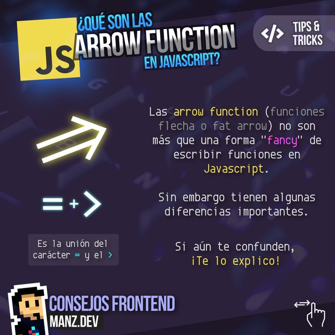

Preguntas Teoricas
Las funciones flecha => permiten definir de manera compacta una función convencional. Si la función tiene solamente una sentencia que devuelve un valor, el uso de funciones flecha nos permite eliminar las llaves y la palabra return. Incluso utilizando parámetros también podemos ver mucho más reducido el código.
La sintaxis básica de las funciones flecha o arrow functions sin parámetros es la siguiente:
// SINTAXIS Y EJEMPLO
() => { sentencias }
const holaMundo = () => 'Hola Mundo';Recordemos que una función es:
Las funciones en Javascript son “objetos de primera clase”, es decir, son objetos que pueden ser manipulados y transmitidos igual que cualquier otro objeto en tu programa.
Toda función es un objeto Function. Una función siempre retorna un valor utilizando return, si no se declara un return la función retornará undefined.
Una función clásica es aquella que creamos utilizando la palabra function
function holaMundo() {
return 'Hola Mundo'
}Pero esta puede ser re-escrita en forma de expresión
const holaMundo = function() {
return 'Hola mundo';
}Lo que nos lleva al ejemplo inicial, una arrow function es una expresión, una forma simplificada de escribir nuestra función ya que:
En Javascript existe el concepto de función anónima, el concepto viene nuevamente de la programación funcional en donde también son conocidas como: function literal, lambda function o lambda expresión. Es básicamente una función que no está “atada” a un identificador. Usualmente son utilizadas como argumentos para otras funciones (higher-order functions).
En los ejemplos anteriores pudimos ver el uso de estas funciones anónimas, sobre todo en las funciones callback de los métodos de array.
Todas las arrow functions son anónimas. Es posible asociar una función anónima a una variable -que no es lo mismo que nombrar la función- esto nos permite crear cierta capacidad de inferir el nombre de la función al que puedes acceder mediante la propiedad name.
Hay varias formas de escribir una arrow function, estas son básicamente variables de una expresión que permite simplificar la sentencia para diferentes casos de uso.
const holaMundo = name => `Hola ${name}`En este caso, para ofrecer una sintaxis concisa, puedes no escribir los paréntesis alrededor de name, o dejarlos si gustas.
Ahora, si necesitas definir un parámetro por defecto, entonces debes forzosamente utilizar los paréntesis.
const holaMundo = (name = "Matias") => `Hola ${name}`Algo que ya hemos visto en los ejemplos anteriores es el retorno implícito, una arrow function tiene la capacidad de retornar inmediatamente cuando el cuerpo de la función es sólo una expresión permitiéndote así mantener todo en una sola línea
const adultUsers = users.filter(user => user.age > 18).map(user => user.name)En el ejemplo podemos ver el uso del retorno implícito (junto con métodos de array y concatenación de estos).
Asumiendo que tenemos un array de users que al menos tienen los atributos age y name queremos obtener todos los nombres de los usuarios mayores de 18 años, para eso usamos filter y map en conjunto.
Podemos ver el retorno implícito en cada llamada a la función “callback” recibida por filter y map.
Sin retorno implícito el ejemplo se vería:
const adultUsers = users.filter(user => {
return user.age > 18
}).map(user => {
return user.name
})En caso de utilizar un solo parámetro, podemos obviar los paréntesis que rodean al parámetro. Como ejemplo, una función que calcule el cuadrado de un número:
// expresion de funcion
var cuadradoEs5 = function(x) {
return x * x;
};
// console.log(cuadradoEs5(3)); // 9
// Arrow funcion
const cuadradoEs6 = (x) => { return x * x };
console.log(cuadradoEs6(3)); // 9En caso de no utilizar ningún parámetro, tendremos que escribir igualmente los paréntesis. Como ejemplo, una función que haga un alert:
// expresion de funcion
var holaEs5 = function() {
alert('Hola');
};
// Arrow funcion
const holaEs6 = () => { alert('Hola'); };
holaEs6();Las funciones flecha también pueden devolver un objeto en su forma de expresión literal. Los objetos se definen entre llaves, algo que entraría en conflicto con la definición de las funciones flecha. Es por ello que para devolver un literal tendremos que rodear a la función de paréntesis. Es decir, que además de las llaves, tendremos que colocar un paréntesis de apertura y otro de cierre. Como ejemplo, esta función que transforma dos parámetros en un objeto:
var agregarIdEs5 = function(id, nombre) {
return {
id: id,
nombre: nombre
}
};
// ARROW
const agregarIdEs6 = (id, nombre) => ({ id: id, nombre: nombre });
console.log(agregarIdEs6(1, "Edu")); // Object {id: 1, nombre: "Edu"}Manipulación de Arrays Un caso de uso muy extendido de las Funciones Flecha es la manipulación de arrays. En este ejemplo vamos a definir un array de automóviles con su nombre y su precio. Seguidamente, crearemos una función para extraer los precios de todos los automóviles
const automoviles = [
{ name:'Renault Megane', precio:16000 },
{ name:'Toyota Corolla', precio:17000 },
{ name:'Honda Civic', precio:18000 }
];
const precios = automoviles.map(automovil => automovil.precio);
console.log(precios); // [16000, 17000, 18000]Las Funciones Flecha, al igual que todo, tienen sus ventajas e inconvenientes. En este apartado veremos cuáles son.
Para empezar, la sintaxis de las funciones puede resultar más confusa para cierto número de personas e incluso hacer que éste sea más difícil de leer, al ser menos natural. Al menos, esto es lo que opinan algunas personas, pero lo cierto es que hay más desarrolladores a favor de su uso que en contra.
Para que no odies las Funciones Flecha por múltiples errores que podrías pensar erradamente que son fallos, hay diversas cosas que debes tener en cuenta:
EJERCICIOSEjercicio 1:
Crea una función de flecha que tome un número como argumento y
devuelva su cuadrado.
Ejercicio 2:
Crea una función de flecha que tome dos números como argumentos
y devuelva su suma.
Ejercicio 3:
Crea una función de flecha que no tome ningún argumento y
devuelva un número aleatorio entre 0 y 1.
Ejercicio 4:
Crea una función de flecha que tome una cadena como argumento y
devuelva la cadena en mayúsculas.
Ejercicio 5:
Crea una función de flecha que tome un array de números como
argumento y devuelva el array ordenado de menor a
mayor.